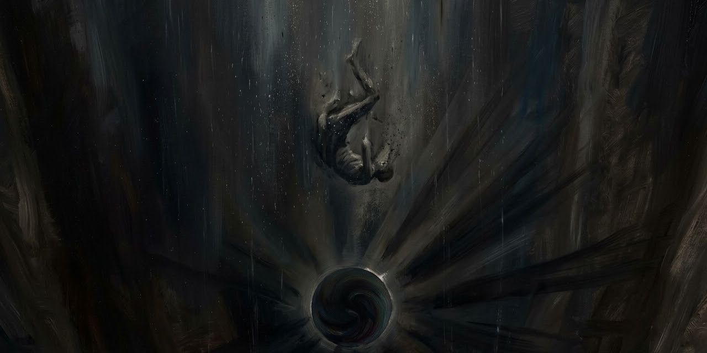

13 de octubre de 2026
El Otro

Jorge Luis Borges
Jorge Luis Borges reunió en El Libro de Arena un puñado de cuentos donde lo imposible encuentra lugar. El Otro abre la puerta: un banco junto a un río, un viejo y un muchacho que son el mismo hombre, separados por medio siglo. El agua corre. Una vida se sienta a conversar consigo misma.
Osmancito buscó las mejores frases del cuento y, con Instinct, les dio una nueva forma.
El hecho ocurrió en el mes de febrero de 1969, al norte de Boston, en Cambridge. No lo escribí inmediatamente porque mi primer propósito fue olvidarlo, para no perder la razón. Ahora, en 1972, pienso que si lo escribo, los otros lo leerán como un cuento y, con los años, lo será tal vez para mí. Sé que fue casi atroz mientras duró y más aún durante las desveladas noches que lo siguieron.
Cambridge es la ciudad universitaria que mira a Boston desde la otra orilla del río Charles. El escritor que cuenta tiene entonces casi setenta años y una obra detrás; el muchacho que está por aparecer todavía no ha publicado un libro.
Serían las diez de la mañana. Yo estaba recostado en un banco, frente al río Charles. El agua gris acarreaba largos trozos de hielo. Inevitablemente, el río hizo que yo pensara en el tiempo. La milenaria imagen de Heráclito.
Heráclito, filósofo griego de hace unos veinticinco siglos, resumió su idea del cambio en una frase que se le atribuye: nadie se baña dos veces en el mismo río. El agua que pasa ya es otra, y el que se baña también. Un banco junto a un río es, desde esa imagen, el sitio donde uno puede sentarse junto a sí mismo sin ser ya el mismo.
El otro se había puesto a silbar. Lo que silbaba, lo que trataba de silbar (nunca he sido muy entonado), era el estilo criollo de La tapera de Elías Regules. El estilo me retrajo a un patio, que ha desaparecido, y a la memoria de Álvaro Melián Lafinur, que hace tantos años ha muerto.
Un estilo es una canción criolla del Río de la Plata, y Elías Regules fue un médico y poeta uruguayo que compuso La tapera. Álvaro Melián Lafinur, pariente lejano de Borges, fue poeta y crítico. En 1910 hizo publicar en el diario El País, de Buenos Aires, la traducción de El príncipe feliz, de Oscar Wilde, que el niño Borges, de diez años, había hecho: su primera publicación.
Luego vinieron las palabras. La voz no era la de Álvaro, pero quería parecerse a la de Álvaro. La reconocí con horror. Me le acerqué y le dije: —Señor, ¿usted es oriental o argentino? —Argentino, pero desde el catorce vivo en Ginebra —fue la contestación.
Oriental es el gentilicio de Uruguay, cuyo nombre oficial es República Oriental del Uruguay, por quedar al este del río Uruguay. Borges llegó a Ginebra en 1914 con su familia, que vivió en un departamento del número 17 de la calle Malagnou hasta 1918. Allí hizo el bachillerato, y años después sería la ciudad donde moriría, en 1986.
Le pregunté: —¿En el número diecisiete de Malagnou, frente a la iglesia rusa? Me contestó que sí. —En tal caso —le dije resueltamente— usted se llama Jorge Luis Borges. Yo también soy Jorge Luis Borges. Estamos en 1969, en la ciudad de Cambridge. —No —me respondió con mi propia voz un poco lejana. Al cabo de un tiempo insistió: —Yo estoy aquí en Ginebra, en un banco, a unos pasos del Ródano.
El Ródano es el río que atraviesa Ginebra. Un mismo banco queda así junto a dos ríos, y cada uno de los dos hombres vive en un año distinto.
Lo raro es que nos parecemos, pero usted es mucho mayor, con la cabeza gris. Yo le contesté: —Puedo probarte que no miento. Voy a decirte cosas que no puede saber un desconocido. En casa hay un mate de plata con un pie de serpientes, que trajo del Perú nuestro bisabuelo. También hay una palangana de plata, que pendía del arzón. En el armario de tu cuarto hay dos filas de libros.
El mate es la calabaza donde se toma la yerba, y el arzón, la parte delantera de la montura. Son recuerdos de una familia criolla: cosas que solo la familia conoce, y por eso mismo pruebas que el viejo cree decisivas.
No he olvidado tampoco un atardecer en un primer piso de la plaza Dubourg. —Dufour —corrigió. —Está bien. Dufour. ¿Te basta con todo eso? —No —respondió—. Esas pruebas no prueban nada. Si yo lo estoy soñando, es natural que sepa lo que yo sé. Su catálogo prolijo es del todo vano. La objeción era justa. Le contesté: —Si esta mañana y este encuentro son sueños, cada uno de los dos tiene que pensar que el soñador es él. Tal vez dejemos de soñar, tal vez no. Nuestra evidente obligación, mientras tanto, es aceptar el sueño, como hemos aceptado el universo y haber sido engendrados y mirar con los ojos y respirar. —¿Y si el sueño durara? —dijo con ansiedad. Para tranquilizarlo y tranquilizarme, fingí un aplomo que ciertamente no sentía. Le dije: —Mi sueño ha durado ya setenta años. Al fin y al cabo, al recordarse, no hay persona que no se encuentre consigo misma. Es lo que nos está pasando ahora, salvo que somos dos. ¿No querés saber algo de mi pasado, que es el porvenir que te espera? Asintió sin una palabra. Yo proseguí un poco perdido: —Madre está sana y buena en su casa de Charcas y Maipú, en Buenos Aires, pero padre murió hace unos treinta años. Murió del corazón. Murió con impaciencia de morir, pero sin una queja. Nuestra abuela había muerto en la misma casa. Unos días antes del fin, nos llamó a todos y nos dijo: "Soy una mujer muy vieja, que está muriéndose muy despacio. Que nadie se alborote por una cosa tan común y corriente".
Charcas y Maipú es la esquina de Buenos Aires donde vivió Borges, en el número 994 de la calle Maipú, desde 1944. El viejo no da una dirección cualquiera: recuerda su propia casa. Entre el muchacho de Ginebra y el viejo de Cambridge pasaron cincuenta y un años.
En el tramo siguiente hablan de la familia, del mundo que vendrá, de un libro de Dostoievski y de unos versos todavía sin escribir.
Los demonios es una novela de Fiódor Dostoievski, publicada en 1872, sobre un grupo de conspiradores en una provincia rusa. En 1918 la Revolución rusa tenía un año y la Primera Guerra Mundial acababa de terminar: un joven que leía a Dostoievski y quería escribir versos sobre la fraternidad respiraba el aire de su tiempo.
Yo, que no he sido padre, sentí por ese pobre muchacho, más íntimo que un hijo de mi carne, una oleada de amor.
El anglosajón es el inglés más antiguo, el de poemas épicos como Beowulf. Borges lo estudió en su madurez.
Aventuró una tímida pregunta: —¿Cómo anda su memoria? Comprendí que para un muchacho que no había cumplido veinte años, un hombre de más de setenta era casi un muerto. Le contesté: —Suele parecerse al olvido, pero todavía encuentra lo que le encargan. Estudio anglosajón y no soy el último de la clase. Nuestra conversación ya había durado demasiado para ser la de un sueño. Una brusca idea se me ocurrió. —Yo te puedo probar inmediatamente —le dije— que no estás soñando conmigo. Oí bien este verso, que no has leído nunca, que yo recuerde. Lentamente entoné la famosa línea: L'hydre — univers tordant son corps écaillé d'astres.
El verso es de Victor Hugo, el gran poeta francés del siglo XIX, y pertenece a «Lo que dice la boca de sombra», de Las contemplaciones (1856). Dice, más o menos: la hidra-universo, retorciendo su cuerpo escamado de astros. Es la imagen del universo como un monstruo marino inmenso, cubierto de estrellas como de escamas.
Sentí su casi temeroso estupor. Lo repitió en voz baja, saboreando cada resplandeciente palabra. —Es verdad —balbuceó—. Yo no podré nunca escribir una línea como ésa. Hugo nos había unido.
Walt Whitman, el gran poeta estadounidense del siglo XIX, cantó la vida, la amistad y los hombres comunes en Hojas de hierba, un libro que publicó en 1855 y siguió reescribiendo hasta su muerte.
Antes, él había repetido con fervor, ahora lo recuerdo, aquella breve pieza en que Walt Whitman rememora una compartida noche ante el mar, en que fue realmente feliz. —Si Whitman la ha cantado —observé— es porque la deseaba y no sucedió. El poema gana si adivinamos que es la manifestación de un anhelo, no la historia de un hecho. Se quedó mirándome. —Usted no lo conoce —exclamó—. Whitman es incapaz de mentir. Medio siglo no pasa en vano. Bajo nuestra conversación de personas de miscelánea lectura y gustos diversos, comprendí que no podíamos entendernos. Éramos demasiado distintos y demasiado parecidos. No podíamos engañarnos, lo cual hace difícil el diálogo. Cada uno de los dos era el remedo caricaturesco del otro. La situación era harto anormal para durar mucho más tiempo. Aconsejar o discutir era inútil, porque su inevitable destino era ser el que soy. De pronto recordé una fantasía de Coleridge. Alguien sueña que cruza el paraíso y le dan como prueba una flor. Al despertarse, ahí está la flor.
Samuel Taylor Coleridge, poeta inglés del romanticismo, dejó esa pregunta en un cuaderno de notas sin responderla: si la flor está en la mano al despertar, «¡y entonces qué!».
Se me ocurrió un artificio análogo. —Oí —le dije—, ¿tenés algún dinero? …ahora, me das una de tus monedas.
Una prueba, para valer, tiene que cruzar al otro lado: la flor de Coleridge sobrevive al despertar, y el billete debería sobrevivir al encuentro.
Yo le tendí uno de esos imprudentes billetes americanos que tienen muy diverso valor y el mismo tamaño. Lo examinó con avidez. —No puede ser —gritó—. Lleva la fecha de mil novecientos setenta y cuatro. Meses después alguien me dijo que los billetes de banco no llevan fecha. —Todo esto es un milagro —alcanzó a decir— y lo milagroso da miedo. Hizo pedazos el billete y guardó la moneda. Respondí que lo sobrenatural, si ocurre dos veces, deja de ser aterrador. Le propuse que nos viéramos al día siguiente, en ese mismo banco que está en dos tiempos y en dos sitios. Asintió en el acto y me dijo, sin mirar el reloj, que se le había hecho tarde. Los dos mentíamos y cada cual sabía que su interlocutor estaba mintiendo. Le dije que iban a venir a buscarme.
Borges quedó ciego hacia 1955. Su ceguera, dijo él mismo, fue «un lento crepúsculo que duró más de medio siglo», y en una conferencia de 1977 contó que el color amarillo fue el que no le fue infiel.
Cuando alcances mi edad habrás perdido casi por completo la vista. Verás el color amarillo y sombras y luces. No te preocupes. La ceguera gradual no es una cosa trágica. Es como un lento atardecer de verano. Nos despedimos sin habernos tocado. Al día siguiente no fui. El otro tampoco habrá ido. He cavilado mucho sobre este encuentro, que no he contado a nadie. Creo haber descubierto la clave. El encuentro fue real, pero el otro conversó conmigo en un sueño y fue así que pudo olvidarme; yo conversé con él en la vigilia y todavía me atormenta el recuerdo. El otro me soñó, pero no me soñó rigurosamente. Soñó, ahora lo entiendo, la imposible fecha en el dólar.
El dólar con fecha es la flor de Coleridge del cuento: la prueba que sobrevive al despertar.
Coda: la hidra Universo
El verso de la hidra viene de «Ce que dit la bouche d’ombre» («Lo que dice la boca de sombra»), el poema de Victor Hugo que cierra el libro VI de Les Contemplations (1856, poema 26). La boca de sombra es la voz del espectro que le habla al poeta durante todo el poema. Este es el pasaje, en castellano (traducción de Instinct).

Allí zozobra y se hunde en oleadas de desastres
la hidra Universo, torciendo su cuerpo escamado de astros;
allí todo flota y se va en un naufragio oscuro;
en ese abismo sin borde, sin respiradero, sin muro,
llueve sin cesar la ceniza de todo lo que vivió;
y se ve en el fondo, cuando el ojo se atreve a bajar,
más allá de la vida, y del aliento y del ruido,
un espantoso sol negro del que irradia la noche.
Osmancito, con la asistencia de Instinct